initial dag
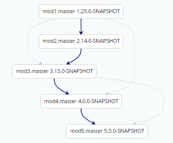
select subdag
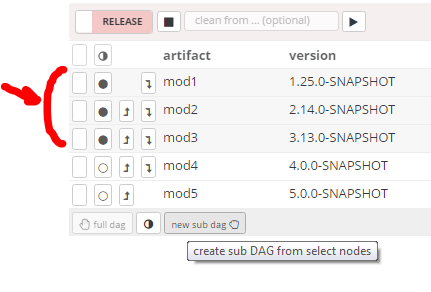
start release
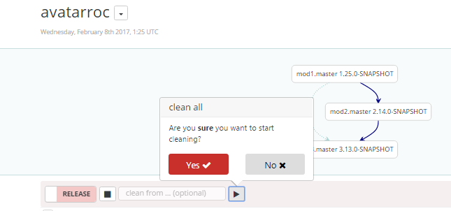
mod1 running
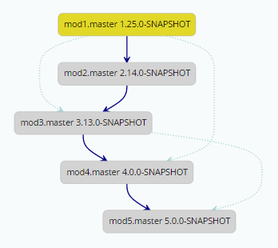
calling xmake leandi release
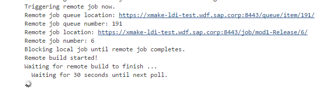
mod1 OK, mod2 running
mod2 OK, mod3 running
mod3 OK, mod4 running
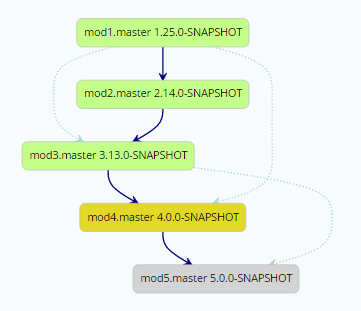
mod4 OK, mod5 running
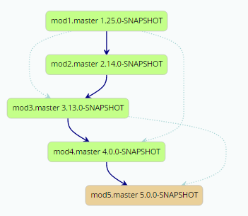
done!
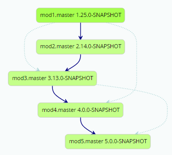
generate new dag
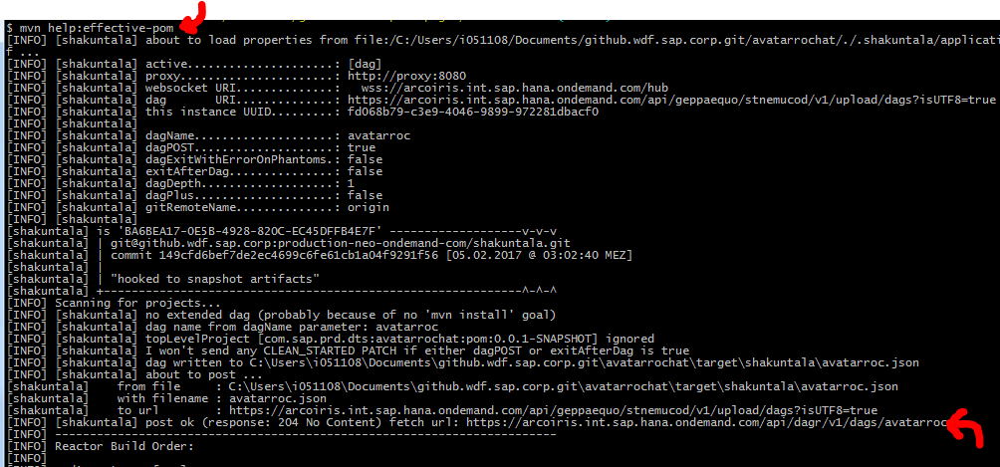
new dag
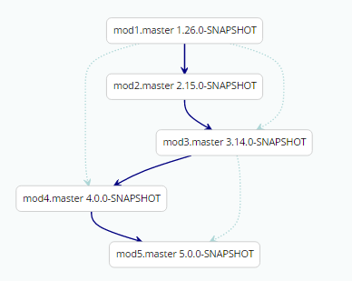
old dag
old and new dag are isomorph
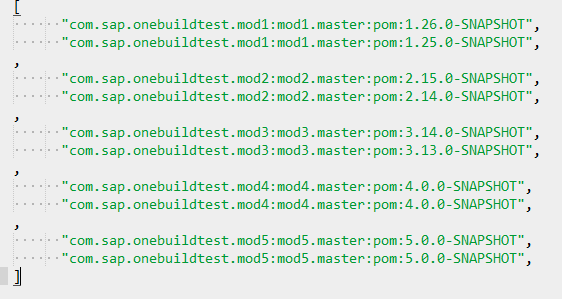
release dag looks good
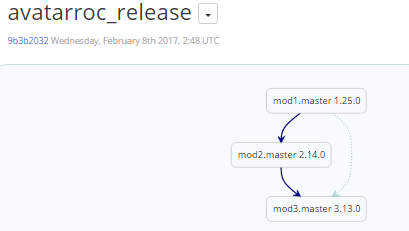